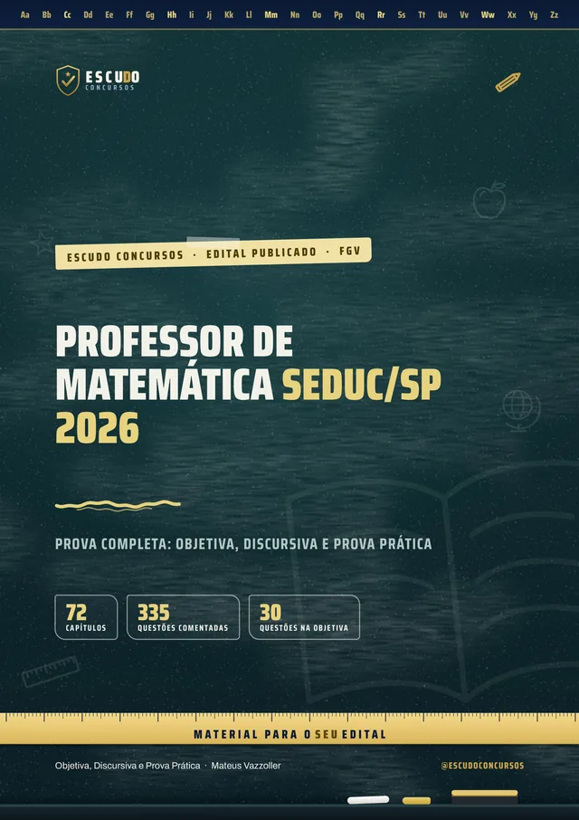
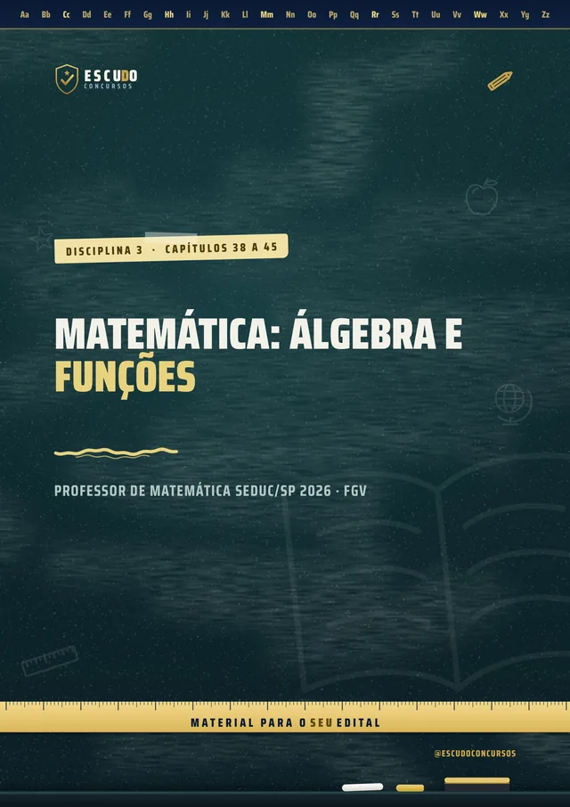
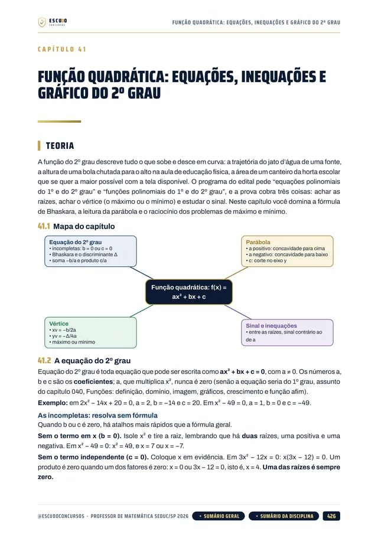
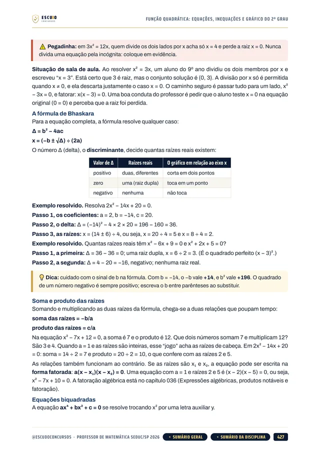
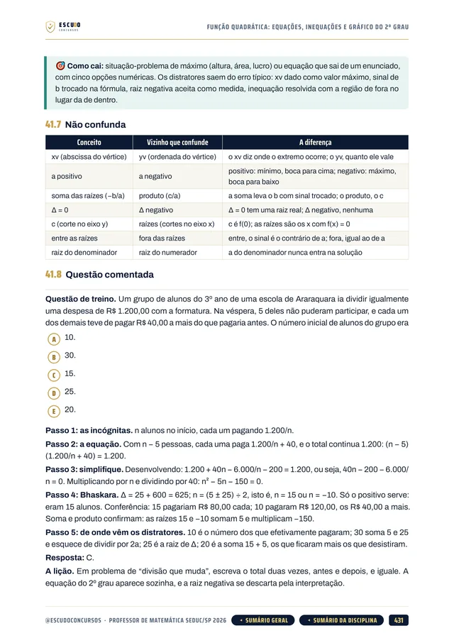
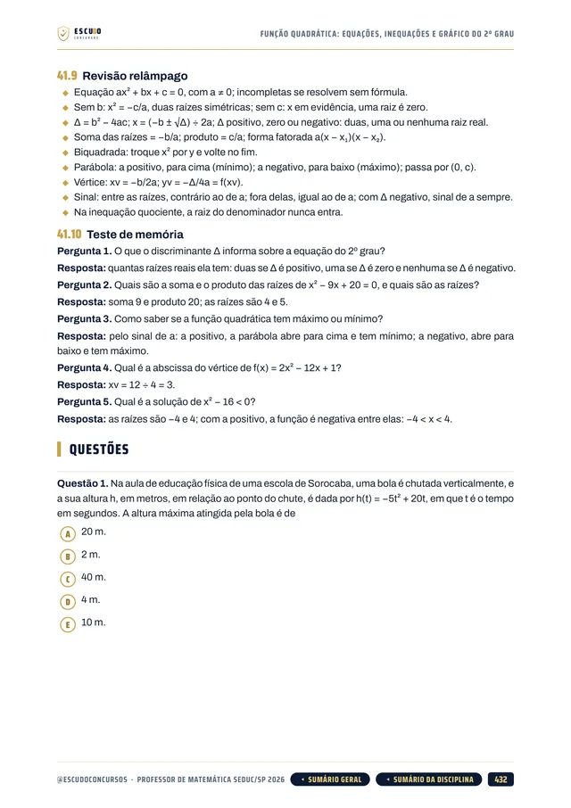
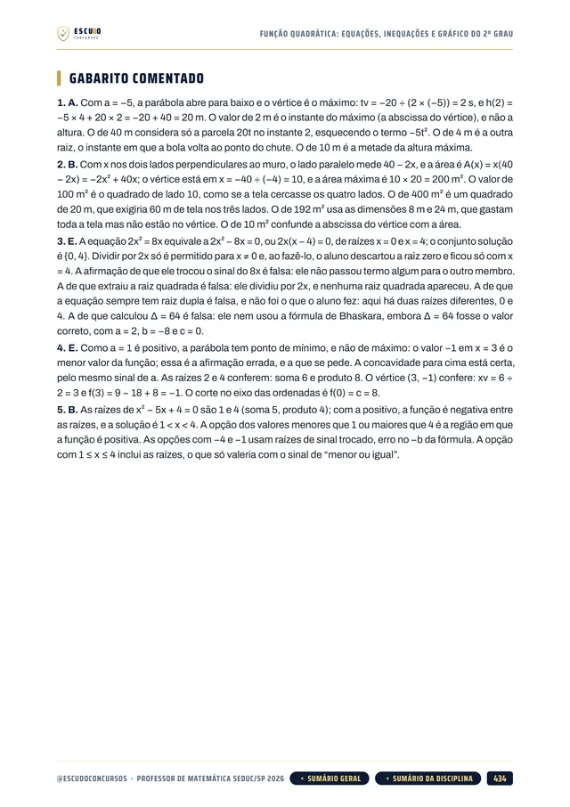
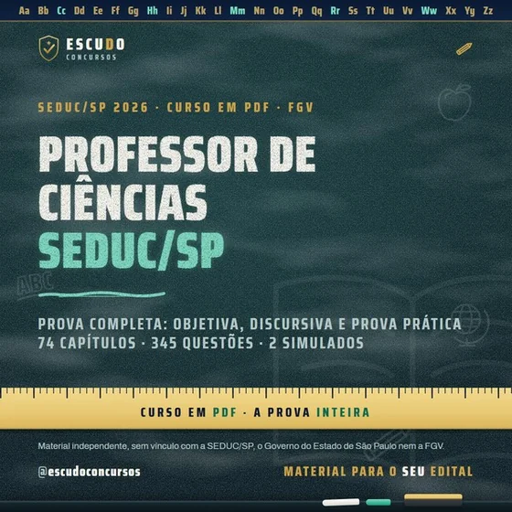
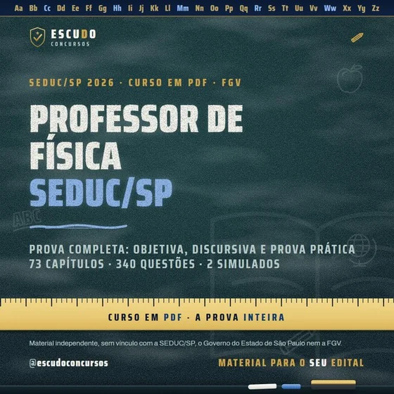
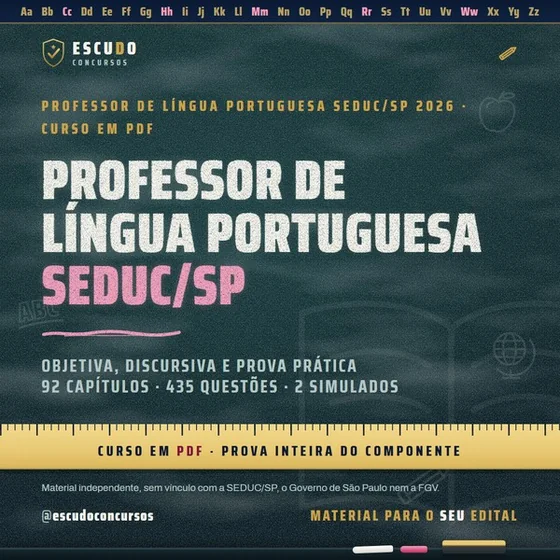

Simulado 1
No meio do caminho
Para medir onde você está e ajustar o estudo enquanto ainda dá tempo.
30 dias após a compra


335questões
comentadas
São 1.262 vagas efetivas de Professor de Matemática, a maior oferta do edital da SEDUC/SP. O seu material cobre a prova inteira, da gestão de sala de aula ao vídeo? Curso feito a partir do Edital nº 01/2026, item por item: as 10 questões de gestão de sala de aula, as 20 de Matemática, a Prova Discursiva e a Prova Prática de Simulação de Aula, com as aulas oficiais de Matemática do Anexo XII. O programa do edital não tem legislação nem conhecimentos gerais.
De acordo com o Edital nº 01/2026, de 19/11/2026 · FGV
de R$ 47 por 21% OFF
R$37
com o cupom PROFMATSP37 até 15/02/2027. Pelo botão, o cupom já vai preenchido.
R$47
Curso completo, com acesso imediato.
Resposta rápida
As provas objetiva e discursiva do concurso de Professor de Ensino Fundamental e Médio da SEDUC/SP são em 25/04/2027, aplicadas pela FGV (Edital nº 01/2026, publicado em 19/11/2026). As inscrições vão das 16h de 26/11/2026 às 16h de 15/02/2027.
Matemática tem 1.262 vagas efetivas, a maior oferta do edital: 505 de 25 horas semanais (subsídio de R$ 3.478,13) e 757 de 40 horas (R$ 5.565,00). A taxa de inscrição é de R$ 64,00.
A Prova Objetiva tem 30 questões de múltipla escolha, de A a E, de 1 ponto cada: 10 de gestão de sala de aula e 20 de Matemática, com mínimo de 15 pontos. Depois vêm a Prova Discursiva (2 questões de até 20 linhas, 20 pontos), a Prova Prática de Simulação de Aula (vídeo de 5 a 7 minutos, 30 pontos) e a Avaliação de Títulos (20 pontos), num total de 100. O programa não tem legislação nem conhecimentos gerais. O curso cobre a objetiva, a discursiva e a prova prática. O curso em PDF da ESCUDO segue o edital item por item, com 72 capítulos, 335 questões comentadas, discursiva, prova prática em vídeo e 2 simulados de 30 questões, e tem 7 dias de garantia pela Hotmart.
O concurso
O concurso de Professor de Ensino Fundamental e Médio (PEFM) da Secretaria da Educação do Estado de São Paulo (Edital nº 01/2026, publicado em 19/11/2026, banca FGV) abre 5.000 cargos efetivos: 2.000 de Jornada Completa, de 25 horas semanais (subsídio inicial de R$ 3.478,13), e 3.000 de Jornada Ampliada, de 40 horas (R$ 5.565,00). Matemática tem 1.262 vagas, a maior oferta do edital: 505 de 25 horas e 757 de 40 horas, já incluída a reserva de 5% para pessoas com deficiência. O requisito é a Licenciatura Plena em Matemática. O mesmo edital forma a lista de contratação temporária (PSS) do ano letivo de 2028, com as mesmas provas.
As inscrições vão das 16h de 26/11/2026 às 16h de 15/02/2027, só pela internet, no site da FGV, com taxa de R$ 64,00 paga por boleto até 16/02/2027. É possível fazer até duas inscrições, desde que as provas caiam em turnos diferentes. As provas objetiva e discursiva são em 25/04/2027, no mesmo dia, com 4 horas de duração; a de Matemática é de manhã, das 8h às 12h.
A Prova Objetiva tem 30 questões de múltipla escolha, de A a E, de 1 ponto cada: 10 de gestão de sala de aula, comuns a todos os componentes, e 20 de Matemática. O mínimo é de 15 pontos. A Prova Discursiva tem 2 questões de até 20 linhas, sobre o Currículo Paulista e os aspectos metodológicos e didáticos (20 pontos, mínimo de 10 e nota acima de zero em cada questão). A Prova Prática é um vídeo de 5 a 7 minutos, enviado de 19/03 a 02/04/2027 (30 pontos, mínimo de 15). A Avaliação de Títulos e de Experiência vale 20 pontos e é só classificatória.
Atenção ao desempate: depois do critério de idade (60 anos ou mais), o primeiro critério é o maior número de acertos nas questões de conhecimentos específicos, e o segundo é o de acertos em gestão de sala de aula. Por isso as 20 questões de Matemática e as 10 de gestão contam duas vezes: na nota e no desempate.
| Etapa | Pontos (mínimo) | Capítulos |
|---|---|---|
| Prova Objetiva: 10 questões de gestão de sala de aula e 20 de Matemática | 30 (15) | 2 a 58 (57), mais o ensino de Matemática, 59 a 64 (6) |
| Prova Discursiva: 2 questões de até 20 linhas | 20 (10) | 65 a 68 (4) |
| Prova Prática de Simulação de Aula: vídeo de 5 a 7 minutos | 30 (15) | 69 a 72 (4) |
| Avaliação de Títulos e de Experiência: classificatória | 20 (sem mínimo) | orientação no capítulo 1 |
| Mais o capítulo 001, sobre como é a prova e como usar o curso. O edital não diz como as 20 questões de Matemática se dividem entre os blocos do programa. | 100 | 72 |
O formato
Você estuda lendo, no seu ritmo, pela área de membros da Hotmart ou com os arquivos baixados. O curso foi feito a partir do Edital nº 01/2026, item por item, na ordem do conteúdo programático de Matemática (Anexo VI) e da bibliografia fechada de gestão de sala de aula, com os documentos oficiais citados nas versões disponíveis em novembro de 2026. As questões seguem o formato da prova: cinco alternativas, de (A) a (E).
Páginas reais do PDF
Toque numa página para ver em tamanho maior.






100% em PDF · Garantia de 7 dias · Pagamento pela Hotmart
O que você recebe
Curso em PDF organizado em 12 módulos pelos blocos da prova, com 766 páginas no padrão visual ESCUDO, para ler no computador, no tablet, no celular ou no app da Hotmart. Não há videoaulas.
72 capítulos da prova completa: gestão de sala de aula (26 capítulos), Matemática (31), ensino de Matemática (6), Prova Discursiva (4) e Prova Prática (4), mais o capítulo 001 sobre como é a prova.
335 questões inéditas com 5 alternativas, de (A) a (E), como na prova, todas com gabarito comentado: por que a correta está correta e onde está o erro de cada uma das outras.
Gestão de sala de aula em 26 capítulos: os 10 itens do programa e a bibliografia fechada do edital (Weinstein e Novodvorsky, Wiggins e McTighe, Willingham e Lemov), com a revisão das obras lado a lado.
Matemática em 31 capítulos, pelos 4 blocos do Anexo VI: números e álgebra básica, álgebra e funções (afim, quadrática, exponencial, logarítmica e trigonométricas), geometria e medidas, análise de dados e combinatória.
Ensino de Matemática em 6 capítulos: história da Matemática em situações didáticas, currículo e avaliação, resolução de problemas e modelagem, etnomatemática e material concreto, tecnologias digitais e interdisciplinaridade, com questões de situação de sala de aula.
Prova Discursiva em 4 capítulos: o Currículo Paulista, os critérios de correção do edital, o que zera a questão, respostas-modelo comentadas e a discursiva de Matemática, com habilidades do currículo.
Prova Prática em vídeo em 4 capítulos: as regras e os prazos, a rubrica das quatro dimensões comentada, o método de roteiro de 5 a 7 minutos e os roteiros das 4 aulas oficiais de Matemática do Anexo XII.
Teoria com recursos para memorizar: mapa de cada capítulo, esquemas, quadros de "pegadinha" e "não confunda", questão comentada passo a passo, revisão relâmpago e teste de memória. Navegação clicável: do sumário você vai direto à disciplina e ao capítulo, e volta pelos botões do rodapé.
2 simulados inéditos de 30 questões (10 de gestão de sala de aula e 20 de Matemática, como na objetiva), de 5 alternativas, cada um com uma proposta de discursiva e caderno de comentários com respostas-modelo. O Simulado 1 é liberado 30 dias após a compra e o Simulado 2, 60 dias após a compra.
Área de membros
| Módulo | Conteúdo | Liberação |
|---|---|---|
| M0 Comece aqui | Apresentação + capítulo 001 (como é a prova e como usar o curso). Bônus: PDF completo para baixar e imprimir | Na compra; o PDF completo no 8º dia |
| M1 Gestão de sala de aula: o programa | Capítulos 002 a 011 | Na compra |
| M2 Gestão de sala de aula: a bibliografia | Capítulos 012 a 027 | Na compra |
| M3 Matemática: números e álgebra básica | Capítulos 028 a 037 | Na compra |
| M4 Matemática: álgebra e funções | Capítulos 038 a 045 | Na compra |
| M5 Matemática: geometria e medidas | Capítulos 046 a 052 | Na compra |
| M6 Matemática: análise de dados e combinatória | Capítulos 053 a 058 | Na compra |
| M7 Ensino de Matemática | Capítulos 059 a 064 | Na compra |
| M8 Prova Discursiva | Capítulos 065 a 068 | Na compra |
| M9 Prova Prática em vídeo | Capítulos 069 a 072 | Na compra |
| M10 Simulado 1 | 30 questões (10 de gestão e 20 de Matemática), proposta de discursiva e caderno de comentários | 30 dias após a compra |
| M11 Simulado 2 | 30 questões (10 de gestão e 20 de Matemática), proposta de discursiva e caderno de comentários | 60 dias após a compra |
Treino no formato da prova
Cada simulado tem 30 questões de 5 alternativas, na estrutura da Prova Objetiva: 10 de gestão de sala de aula e 20 de Matemática, mais uma proposta de questão discursiva de até 20 linhas, com caderno de comentários e respostas-modelo. A pontuação segue a do edital: 1 ponto por acerto, 30 pontos na objetiva, mínimo de 15.
Simulado 1
Para medir onde você está e ajustar o estudo enquanto ainda dá tempo.
30 dias após a compra
Simulado 2
Liberado a tempo do último teste antes da prova de 25/04/2027.
60 dias após a compra
Para quem é
Para quem vai prestar Professor de Matemática da SEDUC/SP e quer estudar a gestão de sala de aula, os 20 Específicos de Matemática, a discursiva e a prova prática num só material.
Você tem 7 dias de garantia pela Hotmart. Se não for o que você esperava, pede o reembolso pela própria Hotmart, dentro do prazo.
Sem surpresa na área de membros
Na compra: todas as disciplinas em PDF, uma por módulo, com a teoria e as questões comentadas. É o curso inteiro, para começar a estudar no mesmo dia.
8 dias após a compra: o PDF completo para imprimir. É o mesmo conteúdo dos módulos num arquivo só, liberado depois da garantia de 7 dias.
Simulado 1: 30 dias após a compra, para medir onde você está no meio da preparação.
Simulado 2: 60 dias após a compra, a tempo do último teste antes da prova de 25/04/2027.
O PDF completo e os simulados aparecem bloqueados na área de membros até a data de cada um: não é conteúdo faltando, é a liberação programada.
Dúvidas
Não. É um curso 100% em PDF: teoria, questões comentadas e simulados para ler e resolver.
Sim. Os capítulos 028 a 058 seguem os 4 blocos do programa do Anexo VI, item por item, com questões de nível de professor e situações de sala de aula. Os capítulos 059 a 064 trazem o ensino de Matemática, que apoia a discursiva e o vídeo.
Não. A objetiva é só de gestão de sala de aula (10 questões) e de Matemática (20). O curso não tem bloco de Língua Portuguesa, de legislação nem de atualidades.
O acesso é imediato depois da confirmação do pagamento, pela área de membros da Hotmart (web ou app). O PDF completo para baixar e imprimir é liberado no 8º dia.
O Simulado 1 é liberado 30 dias após a compra e o Simulado 2, 60 dias após a compra.
Só na parte comum: a gestão de sala de aula, o método da Prova Discursiva e o da Prova Prática são iguais para todos os componentes. Os capítulos de Matemática e os roteiros das aulas de Matemática são do componente Matemática.
O edital não informa: diz só que são 20 questões de Matemática e 10 de gestão de sala de aula. Por isso o curso cobre o programa inteiro, com profundidade proporcional ao tamanho de cada item.
A objetiva tem 30 questões de múltipla escolha, de (A) a (E), com uma só correta, de 1 ponto cada, e exige 15 pontos. A discursiva tem 2 questões de até 20 linhas e é feita no mesmo dia, em 4 horas juntas. A prova prática é um vídeo de 5 a 7 minutos, enviado de 19/03 a 02/04/2027. As questões do curso seguem esse formato.
Não. As 335 questões de treino e as dos simulados são inéditas, escritas no formato do edital a partir do conteúdo programático.
Você tem 7 dias de garantia pela Hotmart. Se não for o que você esperava, pede o reembolso.
SEDUC/SP 2026 · Professor de Matemática · Prova completa
de R$ 47 por 21% OFF
R$37
com o cupom PROFMATSP37 até 15/02/2027.
R$47
Curso completo, com acesso imediato.
Material para o SEU edital. ESCUDO Concursos.
Continue estudando

Professor de Ciências SEDUC/SP 2026 · FGVProfessor de Ciências da SEDUC/SP: prova completa
Professor de Física SEDUC/SP 2026 · FGVProfessor de Física da SEDUC/SP: prova completa Professor de Língua Inglesa SEDUC/SP 2026 · FGVProfessor de Língua Inglesa da SEDUC/SP: prova completa
Professor de Língua Inglesa SEDUC/SP 2026 · FGVProfessor de Língua Inglesa da SEDUC/SP: prova completa
Professor de Língua Portuguesa SEDUC/SP 2026 · FGVProfessor de Língua Portuguesa da SEDUC/SP: a prova completa